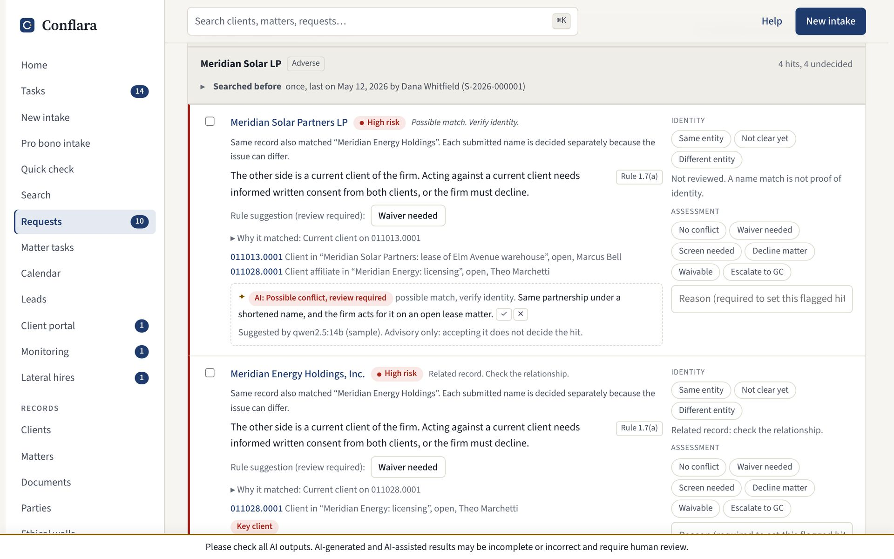
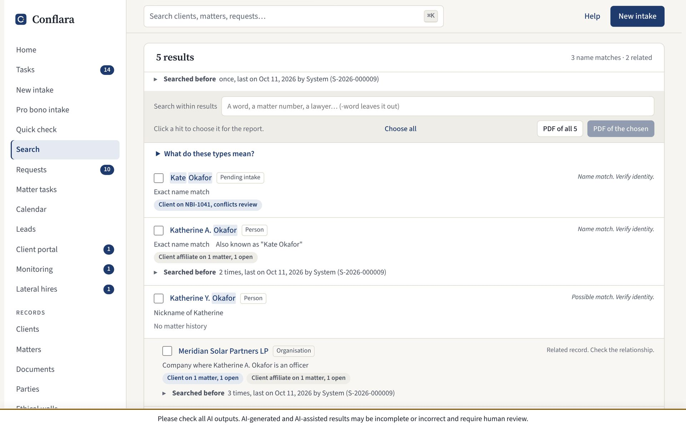
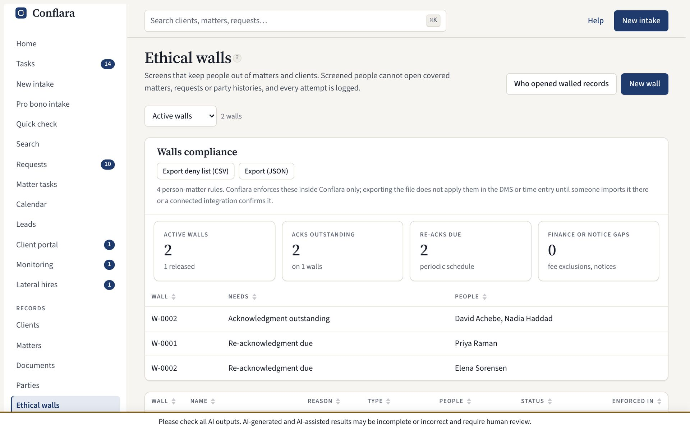
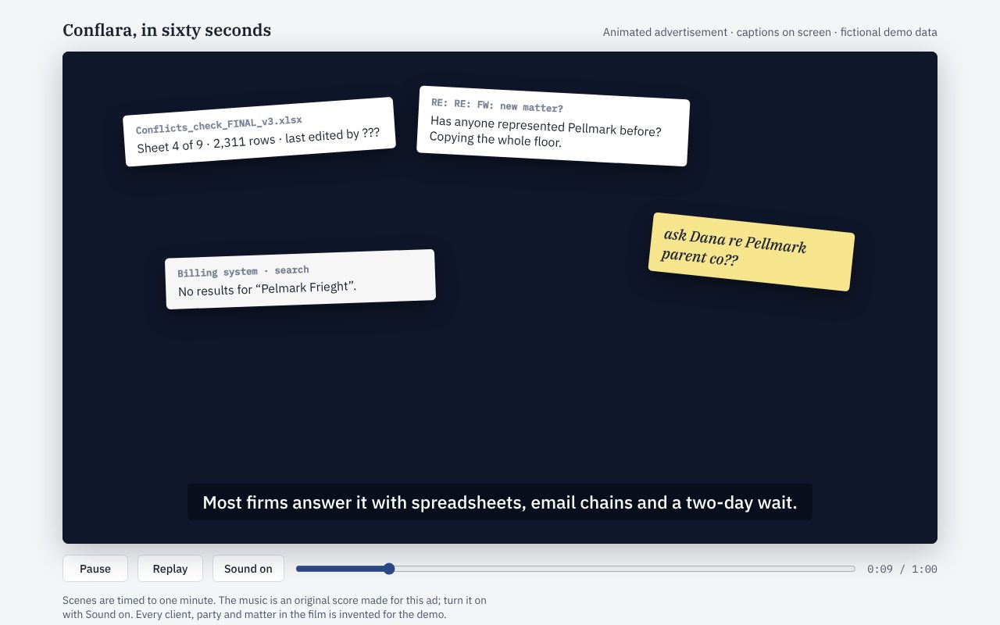

Conflara
A conflicts-check and new-matter intake system for US law firms of 10 to 150 lawyers, carried from a working product through research, pricing, a pilot plan and two films.
Try the demoWatch the 60-second adWatch the walkthrough filmPrototype code
- Firm roles modelled
- 7
- Approval routing rules
- 9
- Tests (66 files)
- 932
- Synthetic parties benchmarked
- 3,000,000
- Competitors researched
- 14+
- Films made in code (60 s and 2:32)
- 2

The problem
Before a firm takes a matter, it must check every party against everyone it has represented or opposed. Mid-size firms usually search their billing system letter for letter, so they miss parent companies, former names, nicknames and misspellings. Intake is a web form nobody connects to the search, and the enterprise tools are quote-only and installed by consultants.
The people involved have different needs. An associate submits the request, a conflicts analyst reviews the hits, practice leaders and general counsel approve, and finance opens the matter. Conflara gives each of seven roles its own view.
How the matching works
- Names are normalized: corporate suffixes stripped, abbreviations expanded, initials collapsed so "A.B.C. Holdings" finds "ABC Holdings".
- Three scorers combine: a phonetic key (Smith and Smyth), Jaro-Winkler for typos, and trigram overlap for spacing. Rare words weigh more than common ones.
- People match on surname first, then first name with 30+ nickname pairs (Kate and Katherine), aliases and former names.
- Strong matches expand two hops through corporate families and one hop through personal links such as spouses and officers.


Decisions that come from knowing the work
Risk follows the relationship
A name match alone means little. Being adverse to a current client on an open matter is high risk; a closed matter is medium; a match only through a personal link is capped below high. Related parties with no matter history are dropped as noise.
Rules are built in
Former clients point to Rule 1.9, prospective clients to Rule 1.18, lawyer relationships to California Rule 1.7(b) and (c) disclosures. Lateral hires get the 1.10, 1.11 and 1.12 analysis, and engagement letters check the California fee-agreement statutes.
Lawyers decide, software suggests
The local AI pre-sorts hits and drafts memos, but every AI-filled field carries a mark until a person confirms it. Restricted and walled data never reaches the model, and accepting a suggestion never decides a hit.
Least privilege by role
Approvers see a summary and a sign-off. Requesters see no firm records while they type. Walls are enforced in what the server sends each user, and every blocked attempt is logged.
An audit trail that proves itself
The log is append-only with a hash chain and a "Chain intact" check, and database triggers refuse edits. Matters cannot close until the final bill is issued and trust is at zero.
Speed for the analyst
J and K move between hits, 1 to 5 record a decision, Enter accepts the suggestion, and earlier decisions on the same party appear inline.
Since then: scale, outside data and a private model
Conflara now has about 110,000 lines of TypeScript, 932 tests across 66 files and 140 commits, with roughly 40 of those commits and 13 merged pull requests landing in a single day. It runs two ways from the same code: a browser-only demo on fictional data, or a firm server with its own database, single sign-on, email and an AI model on the firm's own hardware.
Built for a firm with millions of names
Row-level storage, incremental sync and server-side search replaced loading everything into the browser. A repeatable benchmark on synthetic firms (invented names only) goes up to 3,000,000 parties, with a written account of what limited a large firm and what changed.
Outside entity data, watched nightly
A party can be linked to its public-register record: legal-entity data and SEC filings, including subsidiaries read from the latest annual report. A person chooses which names and parents or subsidiaries to add. A nightly job lists what changed for a person to accept or set aside, and cleared requests are flagged for another look. The docs say plainly which sources are built, tested against recorded answers, or only stubbed.
Search that is honest about itself
Every search gets a number and shows what it covered and where its limits are. An empty or missing source is never shown as clearance, hits carry plain labels such as "likely same entity" instead of scores, and a no-match result is neutral, not green.
Faster hit review
A compact hit list with sticky party headers, identity review kept apart from the conflict assessment, and follow-ups tracked until resolved. The suggested order is learned locally from the firm's own past decisions, shows its factors and counts, is off by default, and never hides a hit or records a decision. An offline evaluation of the ranking is written up in the repo.
Confidentiality and lateral hires
Confidential matters are searched in batch without being revealed: the user is told there is a confidential match and nothing more. Lateral hires get a pre-start checklist with distinct pending, blocked, not-applicable and complete states, each backed by evidence.
Compliance records
Required documents per request, a summary of each conflict, and tracking for business-associate agreements, joint-representation consents and founder acknowledgements.
Measured, not claimed
- Name search (median): 77 ms to 1.3 ms at 50,000 parties; 535 ms to 5.3 ms at 250,000.
- Submitting an intake: 1.5 s to 37 ms at 50,000; 8.0 s to 20 ms at 250,000.
- After a colleague's change, a browser downloads 1 KB instead of reloading 200 KB.
- Server memory at 250,000 parties: 5.4 GB down to 1.8 GB.
All figures come from a benchmark script run on synthetic firms with invented names.
A model that stays on the firm's hardware
The AI runs through Ollama or any OpenAI-compatible local server, so client names never leave the building. It triages hits with a short reason, finds parties in a matter description or pasted email (any name that is not in the text is discarded), drafts a conflicts memo from the recorded decisions only, and suggests column mapping for imports. Every use is written to the audit log with the model name. The ranking model is a separate local statistical fit that uses no AI provider.
Teaching and testing inside the app
- Role-based walkthroughs (open a matter, prepare a request, approve, clear, get your firm live) that point at things but never click, submit or decide.
- A first-week checklist that ticks itself off from what the person actually does, with tests that limited roles are never shown a step for a page they can't open.
- A test environment on a fictional firm, marked by a striped banner on every page. It never writes to live data, sends email or calls an outside AI provider.
Support without sharing firm data
An administrator builds a support bundle of counts, settings switches, versions and error messages with names replaced by placeholders, reads it, then saves it. Nothing is sent automatically, and saving is written to the audit trail. To see a problem happen, support uses a test firm of made-up records at the same size and shape. The live app opens empty, with no sample data, and the desktop app ships for Windows, macOS and Linux with a first-run setup.
Taking it to market
- Research. 14+ competitors compared from public sources, 21 gaps ranked, and an opening found: nothing credible is priced between about $250 a year and an enterprise quote.
- Pricing. Published per-lawyer tiers at $25 and $45 a month, with staff users free. A 30-lawyer firm on the higher tier comes to $16,200 a year.
- Pilot. Five firms over 90 days in four phases, measured on intake-to-cleared time, analyst hours per check and hits the old system missed.
- Honesty. A security table that says what is built and tested, built but untested, documented only, and not started.

It began as the Conflicts Desk prototype in Claude Code, with tests and CI, and grew into Conflara. I supplied the domain: how conflicts departments actually run, which rules apply, and where existing tools fall short. Claude built the search engine, the synthetic firm and every screen. It then helped research competitors, price the product, write the pilot pack and script and code both films.